7. SciCura
(This page is an unpolished stub. You can help by joining us or long-term funding our team.)
1. A tale of two SciCuras
SciCura is a web-application for curation, based on VSM. It’s a multi-purpose platform for crowdsourced knowledge collection. – But, currently there are two “SciCura“s :
SciCura 1 is just a research prototype. It’s a skeleton web application, originally only for demonstrating VSM. It was developed by one person, during years of volunteer work. The web app is now being used for a real curation project. So it serves as a testimonial of how much curators like VSM. Which is nice!
Other people can already play with the demo at demo.scicura.org. – There, start by selecting a template at the top-left.
SciCura 2 is still just a dream of what could be: a community-based, multi-purpose curation platform.
Like a Wiki but where every page is a full, VSM-based summary of a research paper, for all papers.
With public and perhaps temporarily private ‘curation projects’.
And with linked or editable dictionaries with version control. And with user role management, curation discussion, and a curation quality management process.
And with third-party plugins for computation on the huge graph of linked, curated data.1 Sounds like a business idea, not?
It’s unfortunate for science and society (and our energy), that we couldn’t reach anyone yet with the vision or ambition to fund it. Yet!
Then again, the purpose of this site is to reach people on a larger scale.
To communicate more efficiently than with one person at a time
(during a typical ‘intro’ meeting that often turns out hours longer than planned because people get so interested and involved).
But that’s all I can write for now. More later maybe, if I find time and inspiration.2 And I’m a software developer at heart.
After hours of writing and rewriting text, my mental batteries are drained.
While after hours of programming, I often feel more hungry to solve all the next challenges!
For now, here is:
2. An earlier text we wrote on SciCura v2 (the Holy Grail) :
SciCura-based community curation
Now that we have a flexible and simple curation method (VSM) that enables a research community to curate whatever they need, we can develop SciCura: a web-based platform for community curation.
Our vision is that after several years it would have one page per paper, holding a VSM-sentence-based digital abstract of that paper’s detailed findings. This would be similar to a Wikipedia-page, except that the content is fully semantic: the meaning of every term and complex sentence is clearly understood by software.
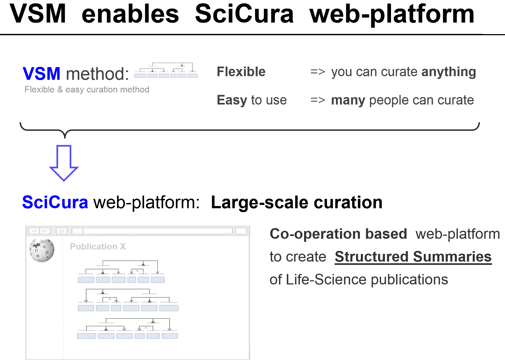
A fully social web platform would also support features like: commenting to discuss interpretations (a real curator need); an edit history; flagging of problems; and reviewing/approving of statements.
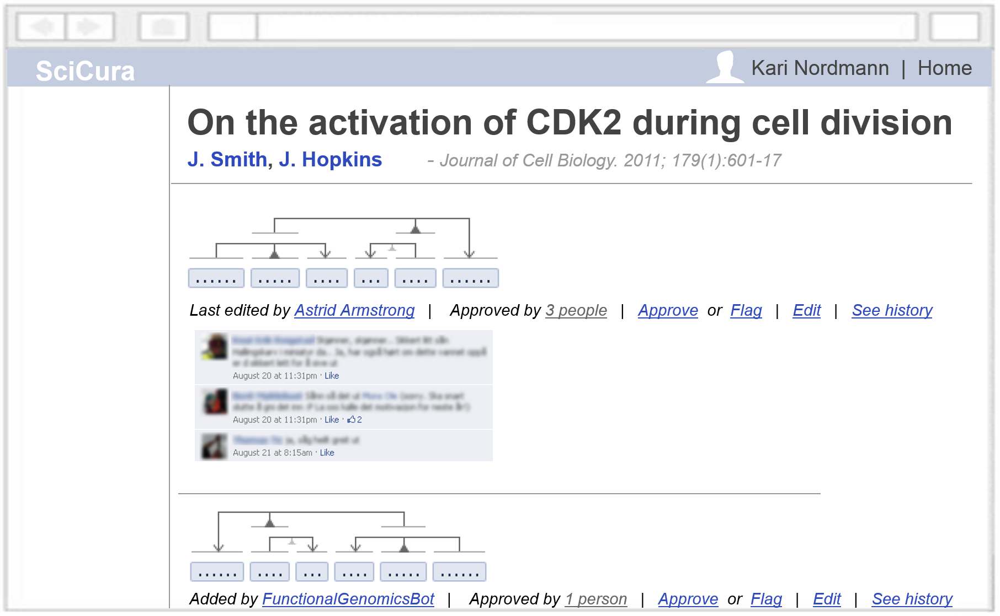
As a comparison: on Wikipedia, 90% just reads, 9% correct typos, and 1% writes content. Similarly, SciCura can grow when most people just fill templates, and some people use VSM‘s full power and design templates for others.
In summary: diverse, unstructured facts can be structured with VSM.
This enables the web-app SciCura to open up previously opaque science results to the world, in a standardized and scalable way.
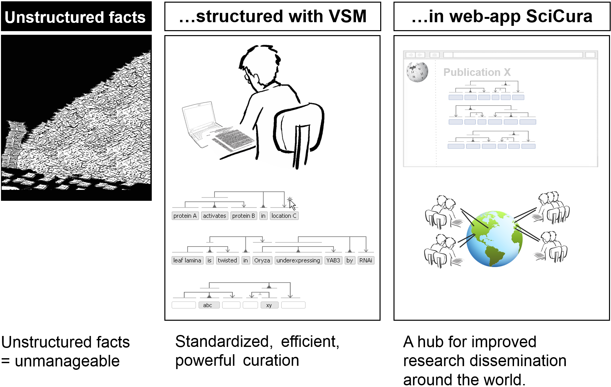
Positioning
A comparison to the current state-of-the-art is shown in the cartoon below. While small-scale curation is accurate and text-mining can boast coverage, both are still limited in scope. Meanwhile, SciCura has potential for heterogeneous, crowd-sourced manual curation. – Small-scale curation may be like walking in a dark forest with a narrow focused flashlight; text-mining is like using a magic lantern that shows many things that aren’t really there (errors); SciCura could foster a global community curation effort of high quality and virtually limitless diversity and depth, increasingly showing the full details of the forest.
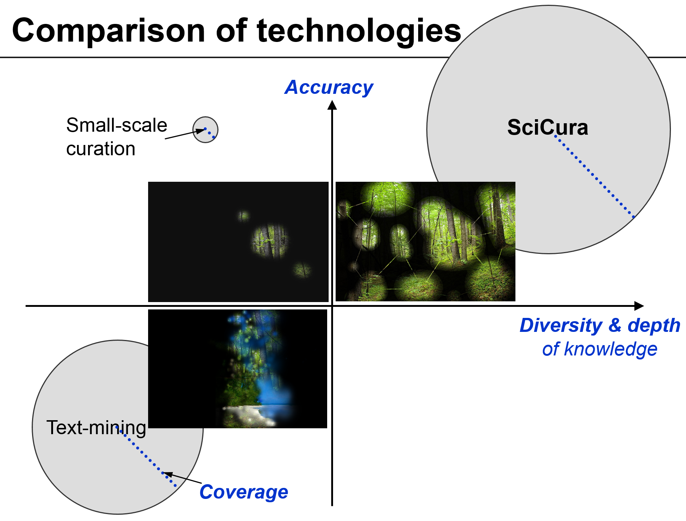
Impact
The impact of SciCura will increase with growing numbers of users. What incentives could there be to get SciCura adopted by a wide community of curators? In our earlier curation experiments, we directly integrated scientists’ curations into a browsable overview (like our viewer OLSVis). The fact that curators could immediately see the results of their work in the context of what else had been entered by their colleagues proved to be an extremely useful ‘carrot’ for participants.
More generally, SciCura will give scientists access to the sum of curated knowledge through an API, and enable user-written output scripts, plugins, or even a shareable App repository. These additions may elevate SciCura to a community development platform much like the popular Cytoscape platform.
Exports of information to established databases (IntAct, the GO database, other) of the Knowledge Commons will further increase the impact. Several export possibilities are already in place (see later), and future export in the semantic web formats RDF and OWL will further the spread of information available through SciCura, including the use of graph searches. OWL exports will also facilitate the integration with the OWL editor Noctua, and pave the way to apply DL reasoning to the collection of curated facts.
SciCura will also impact the development of text mining algorithms. A collection of structured facts linked to original papers or even sentences is an invaluable text corpus for training. Also, by cross-referencing each VSM statement to the original paper through PubMed IDs, platform users will be able to consult the original papers, which serves as an advertisement for journals and publishing houses.
Research also becomes more cost-efficient. Less duplicated effort of re-interpretation of complex results will happen, and relevant information becomes quicker to find.
Other benefits are shown in the figure below.
In summary, SciCura can be a transformative project to open up knowledge, making it computationally available and effectively accessible for Systems Biology,
Systems Medicine and Precision Medicine. It can streamline access to open knowledge, deeply understood by intelligent machines.
SciCura’s growth depends on funding and publicity, making people contribute with code, ideas, and curated knowledge.
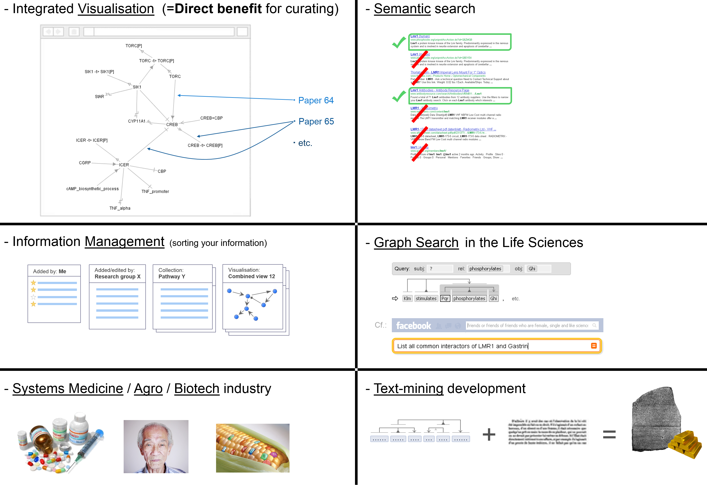
3. An earlier text we wrote on SciCura v1 (the prototype) :
The current prototype platform was developed in collaboration with volunteer curators at NTNU. Their focus is the curation of all DNA binding transcription factors (DbTFs) of human, mouse and rat; and a curation protocol was developed in collaboration with members of the Gene Ontology Consortium and curators of the Mouse Genome Database at the Jackson laboratories.
We use an agile, iterative strategy while building the prototype’s functionality, in continuous discussion with curators. We prioritize the features that are needed first, while we maintain a balance to keep the web app generic enough for next use cases. The SciCura prototype currently features one curation room where six people can simultaneously curate DbTFs, their regulation effect, target gene, and experimental details.
We loaded the back-end database with various dictionaries and ontologies needed for the task. As these can be incomplete (e.g. Cell Type), new terms can be added ad-hoc and then reused, and are flagged.
Each curation statement is linked to the original paper, here simply via PubMed ID. We added a place to put the ‘original sentence’ from which information was extracted, even though facts were often inferred from several parts of text and figures. Curators started using this place to communicate: comments on interpretation, flagging if re-checked yet. This shows a user need to develop social and other features around curated sentences.
1) An early version of the curation room:
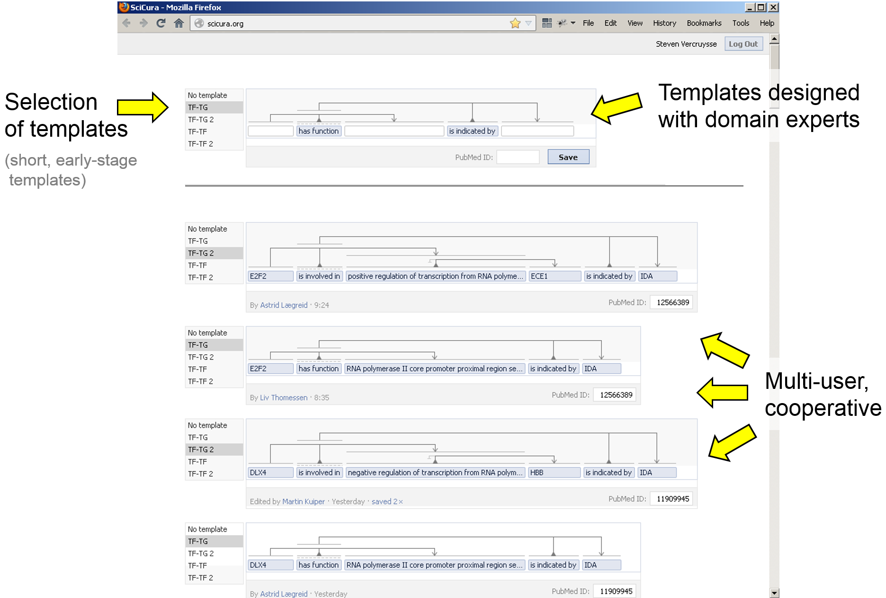
2) One of five current templates, larger to hold additional details; and an autocomplete list:
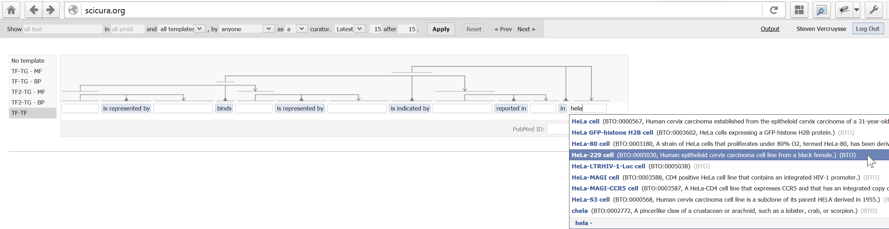
3) A selection from 5000+ curated sentences; under an input box with 5 selectable templates:
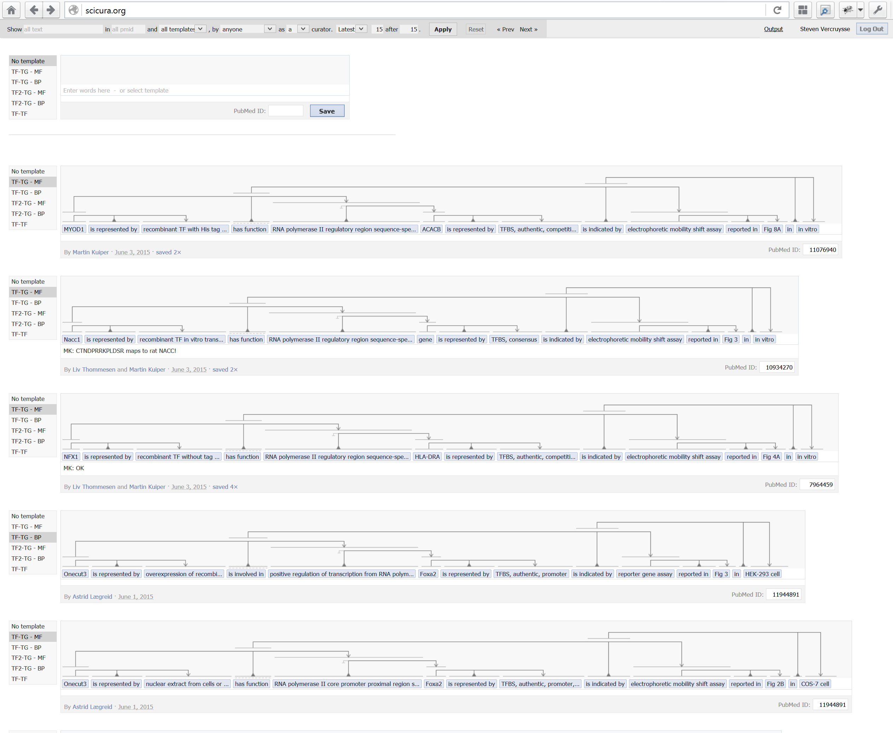
Our users testify they don’t find the trident structures difficult at all. In fact, they are excited about all the complexity they can now handle in such an elegant manner, allowing them to focus on the biology, and avoiding tedious and error-prone entry sheets.
The current prototype can generate output of relevant parts of information to established databases like GO and IntAct. We built a graph-query algorithm that can fish out any matching pattern or sub-pattern of terms and connectors in all VSM-sentences. Then we wrote output-scripts to gather, combine and reformat relevant sets of information.
1) Selection of output scripts:
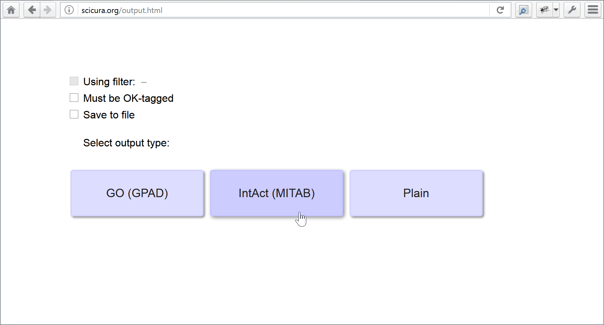
2a) Output results for IntAct:
(And look at the horizontal slider. The script generated the many required columns,
while the user only had to fill in a few autocompleted blanks in a template VSM-sentence!) :
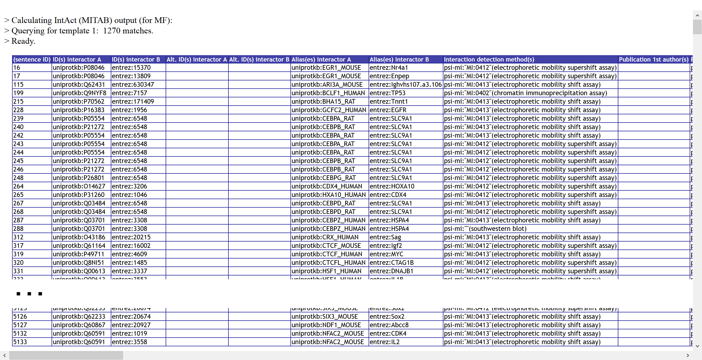
2b) Output results for GO (and the grey rows are were automatically inferred by combining information from two VSM-sentence) :
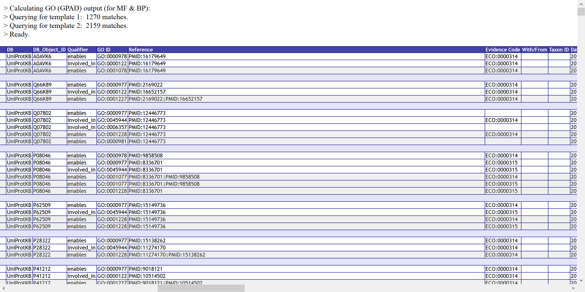
4. A to-do list
A selection of things that definitely need to be done to fully get from SciCura v1 to v2 :
(see also the Discussion’s Roadmap) :
- Integration of ontologies, biological dictionaries, term suggestion service (like TermGenie). – Currently the dictionaries loaded in SciCura 1 have to be manually updated, after user request.
- User-added new-terms management is a critical point that should be addressed. – Currently SciCura 1’s developer has to edit and clean up new terms added by users, because this still has to be done in the database directly. Users should be given an interface to do this efficiently.
- VSM-template building interface. – Currently the main developer has to encode, paste, and change templates manually in the database.
- General ‘refactoring‘ of the codebase.3 This has now been started under the ‘vsmjs’ organization on GitHub. – Because although we kept a ‘general outlook’ when users asked to add features for our one curation project, we were so constrained in resources that it affected code evolvability. – And clean code will open the project for collaborative development!
- More curation pilot projects: both broad and deep. – Broad: to test/showcase VSM on multiple topics. – Deep: to make use of the full flexibility of VSM.
- Multiple curation rooms are needed for this. With access settings, especially for during the messy initial phase of a curation project (before publication of results).
- Query interface. – While a query algorithm has been written, it currently has to be invoked rather cumbersomely, hardcoded from within the program code.
- Exports to RDF/OWL. – Current knowledge experts and existing tools are accustomed to these. So it would be opportune to build a bridge from end-users (biologists etc), over VSM, to existing know-how and technology.
- Imports from text-mining. – It could auto-fill a VSM-template, which a curator only needs to approve or edit. This could make entry more efficient.
- Plugins, apps: for input, update and output like the above two. E.g. visualisation, custom analyses.
- Campaigning. – SciCura’s growth depends on funding and publicity, for stimulating people to contribute with code, ideas, and curated knowledge.
- Etc. – I’m sure there was more, but this page was supposed to be a ‘stub’.
That was a quick preview!
So much has been done. So much more still needs to be done to make SciCura v2 happen.
As said, more proper text may or may not follow later, depending on available resources.
Continue to the About page
- 1 Sounds like a business idea, not?
It’s unfortunate for science and society (and our energy), that we couldn’t reach anyone yet with the vision or ambition to fund it. Yet!
Then again, the purpose of this site is to reach people on a larger scale. To communicate more efficiently than with one person at a time (during a typical ‘intro’ meeting that often turns out hours longer than planned because people get so interested and involved). - 2 And I’m a software developer at heart. After hours of writing and rewriting text, my mental batteries are drained. While after hours of programming, I often feel more hungry to solve all the next challenges!
- 3 This has now been started under the ‘vsmjs’ organization on GitHub.
Blue notes list: